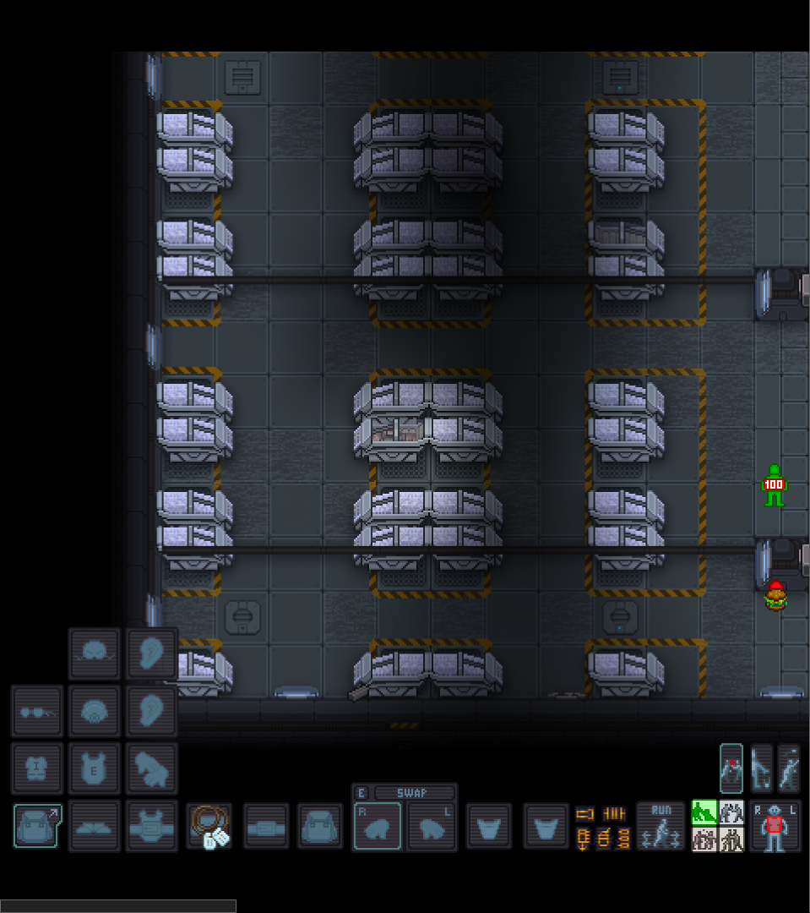
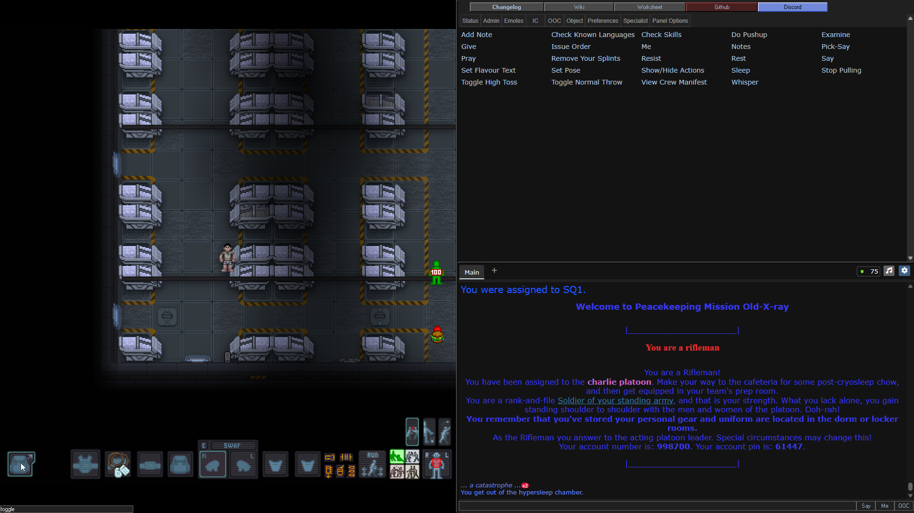
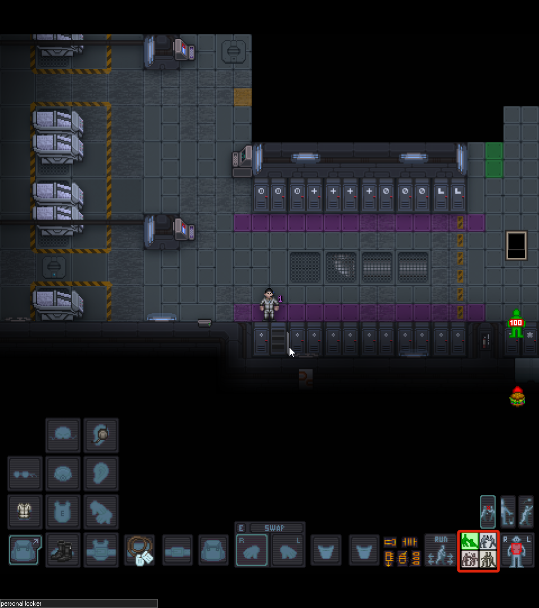

Интерфейс и управление
Игра начинается! Вы просыпаетесь в криокапсуле (или просто «крио») после длительного сна. Прежде чем бежать в арсенал, давайте разберемся, что вы видите на экране.
 Пробуждение в крио
{kind=link}
Общий вид
Теперь перейдём к интерфейсу игровой половины экрана.
 Основные элементы управления
{kind=link}
Экран разделен на две основные части:
- Левая часть (Игровое поле): Здесь происходит основной экшен.
- Ориентирование: Север — сверху, Юг — снизу, Запад — слева, Восток — справа.
- Правая часть (Информационная):
- Сверху: Вспомогательные меню (Персонаж, Связь с администрацией, Эмоуты).
- Снизу: Окно чата и лог событий.
Погружение
Используйте меню эмоутов (справа сверху) для более вариативного отыгрыша.
Панель снаряжения (Слева снизу)
Здесь отображается всё, что надето на вашего бойца.
- Рюкзак: Если вы видите одинокую иконку рюкзака — нажмите на неё, чтобы развернуть полную сетку слотов снаряжения.
- Слоты: Здесь находятся ваши жетоны (ID), пояс, спина (рюкзак), карманы и две руки.
- Активная рука: Выделена рамкой. Именно этой рукой вы будете взаимодействовать с предметами.
 Развернутое меню снаряжения
Развернутое меню снаряжения
Взаимодействие с оружием (Справа снизу)
Желтое меню отвечает за работу с вашим стволом. Запомните: автоперезарядки в игре нет!
- Фонарик: Включить/выключить (если установлен на пушке).
- Извлечь магазин: Вытащить текущий магазин из оружия (прямоугольник со стрелкой вниз).
- Режим огня: Переключение между режимами (три пули). Обычно это «Очередь» или «Одиночные». Пушки редко поддерживают полный автомат.
- Скорость: Переключение между бегом и шагом. 99% времени вы будете бегать.
 Кнопки взаимодействия с оружием
Кнопки взаимодействия с оружием
Системы взаимодействия (Интенты)
Четыре кнопки с человечками — это ваш метод взаимодействия с миром. Выбираются клавишами 1, 2, 3, 4 (верхний ряд клавиатуры, НЕ нумпад!).
| Режим (Интент) | Назначение | Особенности |
|---|---|---|
| 1. Зеленый (Помощь) | Помощь себе и союзникам. | Самый частый интент. Позволяет осматривать других и пропускать союзников сквозь себя (swap). Не стойте в нем в первом ряду — враги тоже могут пройти! |
| 2. Синий (Разоружение) | Попытка забрать оружие. | Бесполезен против ксеноморфов (лапы не оторвать). Позволяет забрать ствол у противника в ближнем бою. |
| 3. Желтый (Захват) | Хватать и тащить. | Незаменим для эвакуации раненых друзей и работы со стационарными орудиями. Безопасен для своих. |
| 4. Красный (Агрессия) | Боевой режим. | В этом режиме вы наносите урон. Осторожно: если не отключено в настройках, можно начать избивать самого себя! |
 Кнопки интентов
{kind=link}
Выбор цели и манипуляции
- Кукла (Target Doll): Управляется цифровым блоком клавиатуры (Numpad). Позволяет выбрать часть тела для стрельбы или лечения. Чаще всего выбирают грудь или голову.
- Действия с предметами (Три кнопки выше куклы):
- Сопротивляться (Resist): Вырваться из захвата, встать со стула, потушиться если горишь (Хоткей -
B). - Бросить (Drop): Положить предмет из активной руки на землю (Хоткей -
Q). - Метание (Throw): Встать в позу для броска (например, для гранаты) (Хоткей -
R).
- Сопротивляться (Resist): Вырваться из захвата, встать со стула, потушиться если горишь (Хоткей -
 Кукла и дополнительные действия
Кукла и дополнительные действия
Состояние персонажа (Справа посередине)
- Планшет (Squad Tablet): Список вашего отряда, их распределение по огневым группам и текущие роли.
- Функция компаса: Помимо списка, сам значок планшета на экране показывает направление к вашему лидеру или ключевой точке. Он может указывать на: Штаб-сержанта (Section Sergeant), Сержанта огневой группы (Squad Leader), Командира взвода или Точку высадки (LZ).
- Как переключать: Нажмите Alt + ЛКМ на иконку планшета, чтобы сменить цель, на которую он указывает.
Почему иконка пустая?
Если планшет не показывает стрелку и выглядит «пустым», значит цель не найдена. Это происходит, если:
- В вашей огневой группе нет лидера (Fireteam Sergeant).
- Вы сами не назначены ни в одну огневую группу.
- Роли Штаб-сержанта или Командира взвода вакантны (никто их не занял).
- Точка высадки еще не установлена.
- Индикатор боли (Pain Indicator): Зеленый человечек с числом «100». Это не полоска здоровья в привычном понимании, а датчик того, насколько вашему персонажу сейчас больно.
- 100 (Зеленый): Вы не чувствуете боли, персонаж в полном порядке.
- Динамика боли: При ранениях цвет индикатора меняться. Если боль станет слишком сильной, персонаж может впасть в болевой шок и потерять сознание.
- Онемение и анестезия: Если вы приняли сильные обезболивающие, индикатор может измениться, показывая, что вы перестали чувствовать конечность или всё тело (онемение). Это может быть опасно: вы не заметите, как истекаете кровью, потому что вам «не больно».
Жизнь и смерть
Пока индикатор не стал серым с надписью Dead — вы живы! Даже если если у вас остановилось сердце, медики могут вас спасти. Но помните: если вам оторвало голову или сожгло дотла — реанимация не поможет.
- Голод: Находится под индикатором здоровья. После крио вы будете голодны — это влияет на выносливость, так что не забудьте перекусить после пробуждения и перед вылетом.
 Состояние персонажа
Состояние персонажа